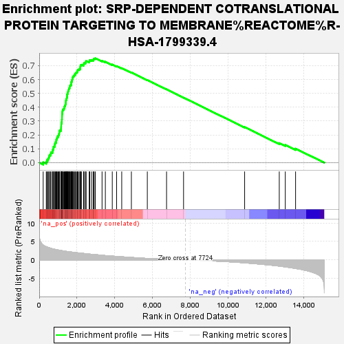
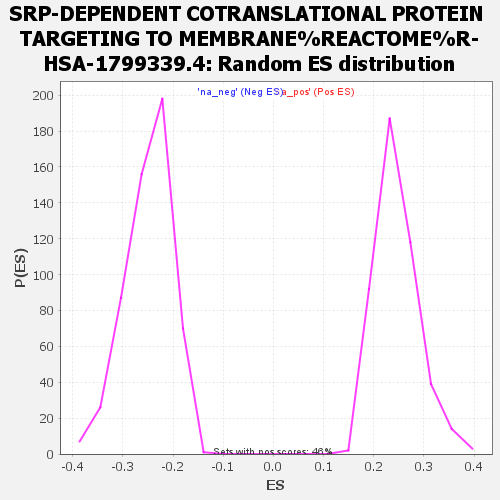

| Dataset | my_ranked_genes |
| Phenotype | NoPhenotypeAvailable |
| Upregulated in class | na_pos |
| GeneSet | SRP-DEPENDENT COTRANSLATIONAL PROTEIN TARGETING TO MEMBRANE%REACTOME%R-HSA-1799339.4 |
| Enrichment Score (ES) | 0.7526814 |
| Normalized Enrichment Score (NES) | 3.0525231 |
| Nominal p-value | 0.0 |
| FDR q-value | 0.0 |
| FWER p-Value | 0.0 |

| SYMBOL | RANK IN GENE LIST | RANK METRIC SCORE | RUNNING ES | CORE ENRICHMENT | |
|---|---|---|---|---|---|
| 1 | SEC11C | 210 | 4.028 | 0.0029 | Yes |
| 2 | SSR2 | 373 | 3.575 | 0.0071 | Yes |
| 3 | RPL35 | 414 | 3.511 | 0.0192 | Yes |
| 4 | RPL41 | 469 | 3.389 | 0.0299 | Yes |
| 5 | FAU | 510 | 3.313 | 0.0411 | Yes |
| 6 | RPS27 | 538 | 3.276 | 0.0531 | Yes |
| 7 | RPS18 | 596 | 3.195 | 0.0627 | Yes |
| 8 | RPLP2 | 622 | 3.130 | 0.0742 | Yes |
| 9 | RPL36 | 702 | 3.028 | 0.0817 | Yes |
| 10 | RPL19 | 717 | 3.002 | 0.0934 | Yes |
| 11 | RPN2 | 747 | 2.962 | 0.1039 | Yes |
| 12 | RPL11 | 757 | 2.952 | 0.1157 | Yes |
| 13 | RPS27A | 815 | 2.887 | 0.1240 | Yes |
| 14 | RPL39 | 825 | 2.881 | 0.1355 | Yes |
| 15 | RPL27 | 848 | 2.839 | 0.1460 | Yes |
| 16 | RPS16 | 896 | 2.799 | 0.1546 | Yes |
| 17 | RPS15 | 901 | 2.793 | 0.1661 | Yes |
| 18 | RPS13 | 930 | 2.762 | 0.1758 | Yes |
| 19 | RPS11 | 953 | 2.739 | 0.1859 | Yes |
| 20 | RPS9 | 1000 | 2.702 | 0.1942 | Yes |
| 21 | RPLP0 | 1027 | 2.670 | 0.2037 | Yes |
| 22 | SPCS1 | 1057 | 2.636 | 0.2128 | Yes |
| 23 | RPS24 | 1063 | 2.630 | 0.2235 | Yes |
| 24 | RPL36AL | 1080 | 2.618 | 0.2335 | Yes |
| 25 | RPS21 | 1152 | 2.555 | 0.2395 | Yes |
| 26 | RPL27A | 1156 | 2.553 | 0.2500 | Yes |
| 27 | SEC61B | 1160 | 2.548 | 0.2605 | Yes |
| 28 | SRPRB | 1164 | 2.545 | 0.2710 | Yes |
| 29 | RPLP1 | 1168 | 2.542 | 0.2815 | Yes |
| 30 | RPL13 | 1182 | 2.525 | 0.2913 | Yes |
| 31 | RPS28 | 1196 | 2.509 | 0.3010 | Yes |
| 32 | RPL10A | 1198 | 2.505 | 0.3114 | Yes |
| 33 | UBA52 | 1205 | 2.501 | 0.3215 | Yes |
| 34 | RPL8 | 1207 | 2.500 | 0.3320 | Yes |
| 35 | RPS14 | 1209 | 2.498 | 0.3424 | Yes |
| 36 | RPS5 | 1212 | 2.497 | 0.3528 | Yes |
| 37 | RPS12 | 1221 | 2.490 | 0.3627 | Yes |
| 38 | RPSA | 1227 | 2.485 | 0.3728 | Yes |
| 39 | RPL35A | 1243 | 2.472 | 0.3822 | Yes |
| 40 | DDOST | 1296 | 2.429 | 0.3890 | Yes |
| 41 | RPL30 | 1325 | 2.405 | 0.3972 | Yes |
| 42 | RPL22 | 1338 | 2.390 | 0.4065 | Yes |
| 43 | RPS15A | 1368 | 2.371 | 0.4145 | Yes |
| 44 | RPS19 | 1388 | 2.357 | 0.4231 | Yes |
| 45 | RPL24 | 1404 | 2.341 | 0.4320 | Yes |
| 46 | RPL34 | 1410 | 2.340 | 0.4415 | Yes |
| 47 | RPL10 | 1414 | 2.338 | 0.4511 | Yes |
| 48 | RPS7 | 1438 | 2.318 | 0.4593 | Yes |
| 49 | RPL13A | 1455 | 2.298 | 0.4679 | Yes |
| 50 | RPL28 | 1471 | 2.289 | 0.4765 | Yes |
| 51 | RPL18 | 1478 | 2.283 | 0.4857 | Yes |
| 52 | RPS8 | 1481 | 2.280 | 0.4952 | Yes |
| 53 | SSR1 | 1507 | 2.262 | 0.5030 | Yes |
| 54 | RPL38 | 1522 | 2.253 | 0.5116 | Yes |
| 55 | RPS23 | 1534 | 2.243 | 0.5203 | Yes |
| 56 | RPS20 | 1560 | 2.222 | 0.5280 | Yes |
| 57 | RPL3 | 1574 | 2.214 | 0.5364 | Yes |
| 58 | SRPRA | 1610 | 2.200 | 0.5433 | Yes |
| 59 | RPL37A | 1614 | 2.196 | 0.5523 | Yes |
| 60 | RPL31 | 1649 | 2.172 | 0.5592 | Yes |
| 61 | RPS3 | 1692 | 2.137 | 0.5654 | Yes |
| 62 | SSR4 | 1694 | 2.137 | 0.5743 | Yes |
| 63 | RPL32 | 1698 | 2.135 | 0.5831 | Yes |
| 64 | RPL37 | 1729 | 2.118 | 0.5900 | Yes |
| 65 | RPL26L1 | 1738 | 2.115 | 0.5983 | Yes |
| 66 | RPS6 | 1756 | 2.103 | 0.6060 | Yes |
| 67 | RPL26 | 1762 | 2.097 | 0.6145 | Yes |
| 68 | RPS26 | 1789 | 2.083 | 0.6216 | Yes |
| 69 | RPS4X | 1833 | 2.051 | 0.6273 | Yes |
| 70 | RPL7 | 1859 | 2.036 | 0.6342 | Yes |
| 71 | RPL4 | 1906 | 2.003 | 0.6395 | Yes |
| 72 | RPL6 | 1924 | 1.997 | 0.6468 | Yes |
| 73 | RPS3A | 1976 | 1.963 | 0.6517 | Yes |
| 74 | RPL29 | 2014 | 1.943 | 0.6574 | Yes |
| 75 | RPS4Y1 | 2021 | 1.937 | 0.6651 | Yes |
| 76 | RPL7A | 2051 | 1.923 | 0.6712 | Yes |
| 77 | SPCS2 | 2111 | 1.882 | 0.6752 | Yes |
| 78 | RPS2 | 2165 | 1.856 | 0.6795 | Yes |
| 79 | RPL18A | 2170 | 1.852 | 0.6870 | Yes |
| 80 | RPL5 | 2179 | 1.848 | 0.6942 | Yes |
| 81 | SEC61G | 2184 | 1.842 | 0.7017 | Yes |
| 82 | RPL14 | 2233 | 1.817 | 0.7062 | Yes |
| 83 | RPL12 | 2348 | 1.758 | 0.7059 | Yes |
| 84 | RPL23A | 2355 | 1.749 | 0.7129 | Yes |
| 85 | SRP68 | 2375 | 1.743 | 0.7189 | Yes |
| 86 | RPS25 | 2453 | 1.697 | 0.7209 | Yes |
| 87 | RPN1 | 2463 | 1.694 | 0.7275 | Yes |
| 88 | RPL21 | 2478 | 1.684 | 0.7336 | Yes |
| 89 | RPL15 | 2650 | 1.592 | 0.7289 | Yes |
| 90 | SPCS3 | 2664 | 1.584 | 0.7347 | Yes |
| 91 | SRP9 | 2677 | 1.576 | 0.7405 | Yes |
| 92 | RPL22L1 | 2773 | 1.530 | 0.7406 | Yes |
| 93 | RPS29 | 2862 | 1.489 | 0.7410 | Yes |
| 94 | SRP54 | 2873 | 1.484 | 0.7465 | Yes |
| 95 | SEC11A | 2905 | 1.467 | 0.7506 | Yes |
| 96 | RPL23 | 2966 | 1.440 | 0.7527 | Yes |
| 97 | SSR3 | 3324 | 1.266 | 0.7342 | No |
| 98 | RPS10 | 3499 | 1.179 | 0.7275 | No |
| 99 | RPL17 | 3865 | 1.034 | 0.7075 | No |
| 100 | SRP72 | 4094 | 0.944 | 0.6962 | No |
| 101 | RPL39L | 4365 | 0.853 | 0.6818 | No |
| 102 | RPS17 | 4876 | 0.672 | 0.6505 | No |
| 103 | RPL36A | 5719 | 0.409 | 0.5960 | No |
| 104 | SRP14 | 6737 | 0.172 | 0.5288 | No |
| 105 | SEC61A1 | 7636 | 0.014 | 0.4689 | No |
| 106 | SRP19 | 10867 | -0.790 | 0.2564 | No |
| 107 | RPS27L | 12700 | -1.679 | 0.1411 | No |
| 108 | SEC61A2 | 13018 | -1.885 | 0.1279 | No |
| 109 | TRAM1 | 13562 | -2.313 | 0.1013 | No |
